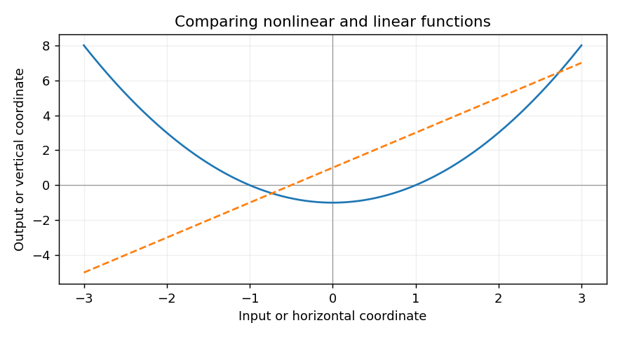
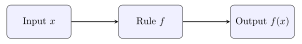
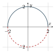
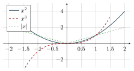
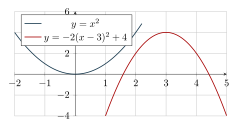
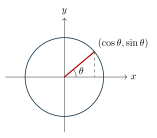
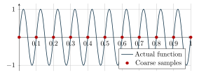
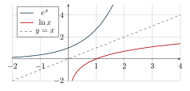

Functions, Graphs, and Mathematical Models
Chapter overview. Calculus studies change and accumulation. Before studying either, we need a precise language for relationships between quantities. A function connects an input to an output; its equation, table, graph, and verbal description each reveal different features. This chapter develops the mathematical language first, then introduces R and Python as tools for investigating and checking mathematical models.
Learning outcomes. By the end of this chapter, students should be able to (i) distinguish functions from relations; (ii) find and interpret domains and ranges; (iii) use multiple representations and classify function families; (iv) combine, compose, and transform functions; (v) work with trigonometric, exponential, logarithmic, and inverse functions; (vi) diagnose misleading computer-generated graphs; and (vii) develop, visualize, and critique a model using R and Python.
Visual concept investigation
Reading a function graph before calculating
A graph encodes a relationship, not merely a shape. Before using algebra or software, identify the units on each axis, the admissible inputs, the scale, and whether the displayed domain matches the modeled situation. An intercept describes a zero or an initial value; it is not automatically a physically meaningful prediction.
Guided investigation. Compare \(f(x)=x^2-1\) and \(g(x)=2x+1\). Solve \(f(x)=g(x)\) algebraically, then use the figure to explain why a plot provides evidence of intersections but not an exact proof.

Check your understanding. If the horizontal axis measures hours and the vertical axis measures milligrams per liter, what are the units of \(f(2)\)? Explain why the range depends on the domain chosen.
Interactive investigation: Function transformations
Functions and their graphs
A rule that assigns one output to each input
A medication concentration changes with time, a reservoir’s volume depends on its water level, and the cost of manufacturing an item depends on production volume. In each situation, we choose an input variable and measure an associated output.
Definition. A function \(f:D\to Y\) assigns exactly one output \(f(x)\in Y\) to every input \(x\in D\). The domain is \(D\), the codomain is \(Y\), and the range is \(\{f(x):x\in D\}\).
The codomain need not equal the range. For example, \(f:\mathbb R\to\mathbb R\), \(f(x)=x^2\), has range \([0,\infty)\), although its codomain is all real numbers. This distinction matters when defining inverse functions.
Example — A restricted quadratic. Consider \(A(r)=\pi r^2\) for the area of a circular patch with radius \(r\) in centimeters. State the physically meaningful domain and range, and evaluate \(A(3)\).
Solution. A radius cannot be negative, so \(r\in[0,\infty)\). Every nonnegative area is attained by \(r=\sqrt{A/\pi}\), so the range is \([0,\infty)\). Finally \(A(3)=9\pi\approx28.27\ \mathrm{cm}^2\). If the patch must have positive radius, both intervals exclude zero.
Example — Domains from algebraic constraints. Find the natural domain of \(f(x)=\sqrt{5-2x}/(x+1)\).
Solution. For a real square root, \(5-2x\geq0\), hence \(x\leq5/2\). The denominator requires \(x\ne-1\). Thus \(D=(-\infty,-1)\cup(-1,5/2]\). Checking the square root alone would miss the excluded point.
Four complementary representations
A verbal description communicates context and units; a table gives observed or computed values; a formula allows algebraic reasoning; a graph displays overall behavior. None is automatically complete. A finite table does not uniquely determine a function between measured inputs. A plot does not prove continuity or monotonicity.

Example — From a table to a model. A tank is filled at a constant rate. Measurements are \((t,V)=(0,12),(2,19),(4,26)\), with time in minutes and volume in liters. Find a linear model and predict the volume at \(t=7\).
Solution. The volume rises \(7\) L every \(2\) min, giving slope \(3.5\) L/min. Since \(V(0)=12\), \(V(t)=12+3.5t\) and \(V(7)=36.5\) L. The model is plausible only while the filling rate stays constant and the tank has capacity.
Graphs, the vertical line test, and piecewise definitions
The graph of \(f\) is the set \(\{(x,f(x)):x\in D\}\). A curve represents \(y=f(x)\) precisely when every vertical line meets it at most once. The circle \(x^2+y^2=4\) fails this test, but its upper semicircle \(y=\sqrt{4-x^2}\) defines a function on \([-2,2]\).

A piecewise function can have different rules in different regions. Consider the tiered cost function \(C(q)=\begin{cases}8q,&0\leq q\leq10,\\80+6(q-10),&q>10.\end{cases}\) The rule is continuous at \(q=10\), since both expressions give \(80\). But the rate of increase changes there, foreshadowing a derivative that does not exist at the breakpoint.
Example — Continuity is not assumed. Consider \(g(x)=\begin{cases}x+1,&x<2,\\5,&x=2,\\x^2-1,&x>2.\end{cases}\) Evaluate \(g(2)\) and describe what the graph does near \(x=2\).
Solution. The defined value is \(g(2)=5\). Approaching from the left gives values near \(3\); approaching from the right also gives values near \(3\). The graph has a hole at \((2,3)\) and a filled point at \((2,5)\). This example anticipates limits and continuity in Chapter 2.
Increasing, decreasing, symmetry, and function families
A function is strictly increasing on an interval if \(x_1<x_2\) implies \(f(x_1)<f(x_2)\); it is strictly decreasing when the output inequality reverses. An even function satisfies \(f(-x)=f(x)\), and an odd function satisfies \(f(-x)=-f(x)\), provided the domain is symmetric about zero.
Example — Classifying functions. Classify \(f(x)=x^4-3x^2\), \(g(x)=x^3-2x\), and \(h(x)=x^2+x\).
Solution. \(f(-x)=f(x)\), so \(f\) is even. \(g(-x)=-g(x)\), so \(g\) is odd. The function \(h\) is neither because \(h(-x)=x^2-x\) differs from both \(h(x)\) and \(-h(x)\) in general.
Common families include constant and linear functions, polynomials, rational functions, radical functions, trigonometric functions, exponentials, and logarithms. Their domains, growth patterns, symmetry, and asymptotes are more informative than memorized shapes alone.

Combining functions and transforming graphs
Algebraic combinations and their domains
For functions \(f\) and \(g\), define \((f+g)(x)=f(x)+g(x)\), \((fg)(x)=f(x)g(x)\), and \((f/g)(x)=f(x)/g(x)\) when the inputs lie in both domains and \(g(x)\ne0\). The domain restriction is part of the mathematical answer, not a technicality.
Example — Combining functions. Let \(f(x)=\sqrt{x+2}\) and \(g(x)=x-1\). Find the domain of \((f/g)(x)\).
Solution. The radical requires \(x\geq-2\). The denominator excludes \(x=1\). Hence \(D=[-2,1)\cup(1,\infty)\).
Composition: one process after another
Definition. The composite \(f\circ g\) is \((f\circ g)(x)=f(g(x))\). Its domain consists of those \(x\) in the domain of \(g\) for which \(g(x)\) belongs to the domain of \(f\).
Example — Temperature conversion and a sensor. A sensor converts temperature \(T\) in Celsius to voltage \(g(T)=0.02T+0.5\) V. A display maps voltage to a reading \(f(v)=100v^2\). Find \((f\circ g)(T)\) and interpret the order.
Solution. The display receives voltage, not temperature. Thus \((f\circ g)(T)=100(0.02T+0.5)^2\). Reversing the composition would describe a different process and generally a different numerical result.
Shifts, reflections, and scaling
Starting with \(y=f(x)\), the function \(f(x-h)+k\) shifts the graph right by \(h\) and up by \(k\). The function \(af(x)\) scales vertically; \(f(bx)\) scales horizontally by a factor \(1/|b|\) when \(b\ne0\). Negative factors also reflect the graph. The inside transformation acts on inputs, explaining why horizontal shifts have a seemingly reversed sign.
Example — Transform a parabola. Describe the graph of \(y=-2(x-3)^2+4\) using \(y=x^2\).
Solution. Shift right 3, stretch vertically by factor 2, reflect across the horizontal axis, then shift up 4. Its vertex is \((3,4)\), its range is \((-\infty,4]\), and its axis of symmetry is \(x=3\).

Trigonometric functions and periodic models
Radian measure and the unit circle
An angle of \(\theta\) radians subtends arc length \(s=r\theta\) on a circle of radius \(r\). On the unit circle, the point reached by rotating through \(\theta\) has coordinates \((\cos\theta,\sin\theta)\). The identity \(\sin^2\theta+\cos^2\theta=1\) follows from the Pythagorean theorem. Radians are the natural units of calculus because derivatives of sine and cosine take their simplest forms when angles are measured in radians.

Amplitude, period, phase, and vertical offset
A sinusoidal model can be written \(y(t)=M+A\sin(\omega(t-t_0))\). Here \(|A|\) is the amplitude, \(M\) is the midline, \(2\pi/|\omega|\) is the period, and \(t_0\) is a phase shift. Physical interpretation requires units: if \(t\) is in hours, \(\omega\) is in radians per hour.
Example — Daily temperature cycle. Suppose temperature is modeled by \(T(t)=18+6\sin\!\left(\frac{\pi}{12}(t-9)\right)\) degrees Celsius, with \(t\) in hours. Identify the period and predicted extremes.
Solution. The period is \(2\pi/(\pi/12)=24\) hours. The midline is \(18^\circ\)C and the amplitude is \(6^\circ\)C, giving a maximum of \(24^\circ\)C and a minimum of \(12^\circ\)C. This idealized model does not account for weather changes.
Trigonometric identities and inverse trigonometric functions
The angle-addition formulas \(\sin(a+b)=\sin a\cos b+\cos a\sin b\) and \(\cos(a+b)=\cos a\cos b-\sin a\sin b\) describe phase shifts. To define \(\arcsin\), we restrict sine to \([-\pi/2,\pi/2]\); to define \(\arccos\), we restrict cosine to \([0,\pi]\). The inverse of a periodic function requires such a restriction because periodic functions are not one-to-one on all real numbers.
Graphing with computers: opportunities and traps
Software plots evaluate a function at finitely many points and join them according to a plotting algorithm. A displayed line is therefore an approximation to a mathematical graph. Poor sampling may conceal narrow peaks or suggest a false discontinuity; connecting points across an asymptote can invent a line segment that is not part of the graph.
Example — A removable discontinuity. For \(x\ne1\), let \(q(x)=(x^2-1)/(x-1)\). Simplify and explain why a naive plot may be misleading.
Solution. Factoring gives \(q(x)=x+1\) for \(x\ne1\). Its graph is the line \(y=x+1\) with the point \((1,2)\) removed. A plotting routine that simplifies the expression and ignores its original domain may draw the missing point as if it were present.
Example — Aliasing of oscillations. Compare the values of \(f(x)=\sin(20\pi x)\) at \(x=0,0.1,\ldots,1\) with its values between those points.
Solution. At every sampled point \(x=k/10\), \(f(x)=\sin(2\pi k)=0\). A graph made from these eleven points looks like the zero function even though the true function oscillates ten times over \([0,1]\). Increasing the sampling density reveals the oscillation.

Exponential functions and growth models
Exponential functions
For \(a>0\), \(a\ne1\), the function \(a^x\) is positive for all real \(x\). It increases when \(a>1\) and decreases when \(0<a<1\). The base \(e\approx2.71828\) is especially important in calculus. A continuous growth model has the form \(Q(t)=Q_0e^{kt}\); \(k>0\) indicates growth and \(k<0\) decay.
Example — Population growth. A bacterial culture begins with 500 cells and follows \(N(t)=500e^{0.18t}\), where \(t\) is measured in hours. Find the predicted count at 4 hours and the doubling time.
Solution. \(N(4)=500e^{0.72}\approx1027\) cells. Doubling occurs when \(2=e^{0.18t}\), so \(t=\ln(2)/0.18\approx3.85\) hours. The model assumes an unchanged relative growth rate and will eventually fail when resources become limited.
Discrete versus continuous compounding
With annual nominal rate \(r\) compounded \(n\) times per year, an initial balance \(P\) becomes \(A(t)=P(1+r/n)^{nt}\). The continuous-compounding limit is \(Pe^{rt}\). These formulas are different models; choosing one requires knowing the financial convention.
Example — Two compounding conventions. For \(P=2000\), \(r=0.05\), and \(t=3\), compute annual and continuous balances.
Solution. Annual compounding gives \(2000(1.05)^3=2315.25\). Continuous compounding gives \(2000e^{0.15}\approx2323.67\). The difference is approximately \(\$8.42\).
Inverse functions and logarithms
When can a function be reversed?
A function is one-to-one if distinct inputs always produce distinct outputs. A strictly monotone function is one-to-one. If \(f\) is one-to-one on its domain, its inverse \(f^{-1}\) satisfies \(f^{-1}(f(x))=x\) and \(f(f^{-1}(y))=y\) for appropriate inputs. Its graph reflects the original graph across \(y=x\).
Example — Invert a calibration model. A calibration model is \(v=0.8+0.04T\), where \(T\) is temperature in degrees Celsius and \(v\) is voltage. Solve for \(T\) as a function of \(v\).
Solution. Subtract \(0.8\) and divide by \(0.04\): \(T(v)=(v-0.8)/0.04=25(v-0.8)\). This inverse converts a voltage reading into an estimated temperature.
Logarithms as inverse exponentials
For \(a>0\), \(a\ne1\), \(\log_a(x)\) is defined for \(x>0\) and satisfies \(a^{\log_a x}=x\). In particular, \(\ln x\) is the inverse of \(e^x\). The identities \(\ln(xy)=\ln x+\ln y\), \(\ln(x/y)=\ln x-\ln y\), and \(\ln(x^r)=r\ln x\) hold when the real logarithms involved are defined.
Example — Recovering an exponential rate. An observed concentration declines from 80 to 50 units over 6 hours under \(C(t)=80e^{-kt}\). Determine \(k\) and the half-life.
Solution. \(50/80=e^{-6k}\), so \(k=-\ln(50/80)/6\approx0.07833\) h\(^{-1}\). The half-life is \(\ln2/k\approx8.85\) h. The estimated rate depends on the assumption of exponential decay.

Computational laboratories: the same mathematics in R and Python
Each laboratory begins with a mathematical question. Code is used to inspect and verify the mathematical result, not to replace it. Students should run the code, annotate outputs with units, and explain what numerical evidence can and cannot establish.
Laboratory 1: domain restrictions and piecewise functions
Investigate \(f(x)=\sqrt{5-2x}/(x+1)\). The algebraic domain is \((-\infty,-1)\cup(-1,2.5]\). Plot only valid values and avoid connecting points across the vertical asymptote at \(x=-1\).
R
f <- function(x) sqrt(5 - 2*x) / (x + 1)
x_left <- seq(-4, -1.02, length.out = 400)
x_right <- seq(-0.98, 2.5, length.out = 400)
plot(x_left, f(x_left), type = "l", col = "navy",
xlim = c(-4, 2.5), ylim = c(-12, 12),
xlab = "x", ylab = "f(x)")
lines(x_right, f(x_right), col = "firebrick")
abline(v = -1, lty = 2)Python
import numpy as np
import matplotlib.pyplot as plt
def f(x):
return np.sqrt(5 - 2*x) / (x + 1)
for left, right in [(-4, -1.02), (-0.98, 2.5)]:
x = np.linspace(left, right, 400)
plt.plot(x, f(x))
plt.axvline(-1, linestyle="--", color="gray")
plt.ylim(-12, 12)
plt.xlabel("x")
plt.ylabel("f(x)")
plt.show()Interpretation. The dashed line marks a forbidden input. A plotted asymptote is not part of the function; the chosen vertical window also clips large values near \(-1\).
Laboratory 2: transformations
Start with \(f(x)=x^2\). Compare \(f(x)\) with \(g(x)=-2(x-3)^2+4\) and verify the transformed vertex \((3,4)\).
R
x <- seq(-2, 5, length.out = 500)
plot(x, x^2, type = "l", col = "navy",
ylim = c(-5, 10), xlab = "x", ylab = "y")
lines(x, -2*(x - 3)^2 + 4, col = "firebrick")
points(3, 4, pch = 19)
legend("topleft", c("x^2", "-2(x-3)^2+4"),
col = c("navy", "firebrick"), lty = 1)Python
import numpy as np
import matplotlib.pyplot as plt
x = np.linspace(-2, 5, 500)
plt.plot(x, x**2, label="x^2")
plt.plot(x, -2*(x-3)**2 + 4, label="-2(x-3)^2+4")
plt.scatter([3], [4])
plt.ylim(-5, 10)
plt.legend()
plt.show()Laboratory 3: periodic models and sampling
Plot \(T(t)=18+6\sin(\pi(t-9)/12)\) for \(0\leq t\leq48\) hours, then compare dense and sparse sampling of \(\sin(20\pi x)\).
R
t <- seq(0, 48, length.out = 1000)
T <- 18 + 6*sin(pi*(t - 9)/12)
plot(t, T, type = "l", xlab = "Hours", ylab = "Temperature (C)")
x <- seq(0, 1, length.out = 1001)
plot(x, sin(20*pi*x), type = "l", xlab = "x", ylab = "sin(20*pi*x)")
coarse <- seq(0, 1, by = 0.1)
points(coarse, sin(20*pi*coarse), pch = 19, col = "red")Python
import numpy as np
import matplotlib.pyplot as plt
t = np.linspace(0, 48, 1000)
T = 18 + 6*np.sin(np.pi*(t - 9)/12)
plt.plot(t, T)
plt.xlabel("Hours")
plt.ylabel("Temperature (C)")
plt.show()
x = np.linspace(0, 1, 1001)
coarse = np.linspace(0, 1, 11)
plt.plot(x, np.sin(20*np.pi*x))
plt.scatter(coarse, np.sin(20*np.pi*coarse), color="red")
plt.show()Laboratory 4: exponential models and inverses
Given \(C(t)=80e^{-kt}\) and \(C(6)=50\), estimate \(k\), compute the half-life, and verify by substitution.
R
k <- -log(50/80)/6
half_life <- log(2)/k
cat("Rate:", round(k, 5), "per hour\n")
cat("Half-life:", round(half_life, 2), "hours\n")
stopifnot(abs(80*exp(-k*6) - 50) < 1e-10)Python
import math
k = -math.log(50/80)/6
half_life = math.log(2)/k
print(f"Rate: {k:.5f} per hour")
print(f"Half-life: {half_life:.2f} hours")
assert abs(80*math.exp(-k*6) - 50) < 1e-10Computational comparison and responsible use
Both languages can calculate numerical values and generate plots. R
uses vectorized arithmetic on numeric vectors; NumPy provides
corresponding vectorized operations in Python. In R, ^
denotes exponentiation, as it does in Python with **; in
Python, ^ is a bitwise operator, not exponentiation. R’s
log() and Python’s math.log() compute natural
logarithms by default. Code should specify input units, meaningful
domains, and expected outputs, and should test important calculations
against independent algebraic results.
Real-world modeling workshop
Model A: tiered energy charges
A household pays a fixed monthly service charge of \(\$12\), plus \(\$0.15\) per kWh for the first 400 kWh and \(\$0.11\) per kWh thereafter. For nonnegative consumption \(q\), a continuous cost model is \[C(q)=\begin{cases}12+0.15q,&0\le q\le400,\\72+0.11(q-400),&q>400.\end{cases}\] The two formulas agree at \(q=400\): both give \(\$72\). The marginal charge changes after the threshold. Students should check whether taxes or other fees are excluded before using the model for actual billing.
Model B: medication elimination
The concentration \(C(t)=C_0e^{-kt}\) models first-order elimination under idealized conditions. The parameter \(k\) has units of reciprocal time. Taking logarithms gives \(\ln C(t)=\ln C_0-kt\), which turns a multiplicative decay model into a linear relationship in log concentration. This is useful for exploratory visualization, but measurement error and clinical interpretation require more sophisticated analysis than the simple model supplies.
Model C: seasonal or daily variation
The sinusoid \(T(t)=M+A\sin(\omega(t-t_0))\) is suitable when a variable has a stable repeating cycle. Before fitting it, ask whether the data actually have a constant period and amplitude. A graph may reveal departures from the model that a single summary statistic conceals.
Chapter exercises
Instructions. Show algebraic reasoning before using software. When a question requests a graph, label axes and units and explain domain restrictions. Computational exercises may be completed in R and Python, unless specified otherwise.
A. Concepts and representations
Explain the difference between a domain, codomain, and range. Give an example where codomain and range differ.
Determine whether the relation \(x=y^2-1\) defines \(y\) as a function of \(x\). Can it define \(x\) as a function of \(y\)?
Find the natural domain of \(f(x)=\sqrt{9-x^2}/(x-2)\) and express it using interval notation.
Determine the range of \(f(x)=(x-1)^2+3\) on (a) \(\mathbb R\) and (b) \([2,5]\).
A reservoir has initial volume 1000 L and loses 12 L per minute. Construct a verbal description, equation, table, and graph. State a physically meaningful domain.
Give two different functions that agree at \(x=0,1,2\) but differ elsewhere. Explain why a finite table does not determine a unique rule.
Sketch \(f(x)=\begin{cases}-x,&x<0,\\x^2,&0\le x\le1,\\1,&x>1.\end{cases}\) Determine its domain and range.
Determine whether \(f(x)=x^6-2x^2\) and \(g(x)=x^5+3x\) are even, odd, or neither. Prove your claims algebraically.
Determine the intervals on which \(f(x)=|x-3|\) is increasing or decreasing using the definition rather than differentiation.
Explain why the vertical line test is sufficient to decide whether a plane curve is the graph of a function of \(x\).
B. Combining and transforming functions
For \(f(x)=\sqrt{x+1}\) and \(g(x)=x-2\), determine the domains of \(f+g\), \(fg\), \(f/g\), and \(g/f\).
For \(f(x)=1/(x-1)\) and \(g(x)=\sqrt{x}\), determine formulas and domains for \(f\circ g\) and \(g\circ f\).
Construct a formula from \(y=\sqrt{x}\) by shifting left 2, reflecting across the \(x\)-axis, and shifting up 5. State its domain and range.
Identify the transformations of \(y=|x|\) producing \(y=3|2x+4|-1\). Find the vertex.
Prove that the composition of two odd functions is odd whenever the composition is defined on a symmetric domain.
Show by counterexample that the sum of an even function and an odd function need not be even or odd.
A sensor follows \(v(T)=0.6+0.03T\) and a display follows \(R(v)=40v^2\). Find \(R\circ v\), and compute the display reading at \(T=20\).
C. Trigonometry, exponentials, and logarithms
Convert \(150^\circ\) to radians. Find the arc length subtended by this angle on a circle of radius 8 cm.
Find the amplitude, period, and midline of \(y=4-3\cos(\pi t/5)\). State the units needed to interpret its period.
Solve \(2\sin x=1\) on \([0,2\pi]\) and justify your answers using the unit circle.
Explain why \(\arcsin(\sin(5\pi/6))\ne5\pi/6\).
A quantity grows from 300 to 450 in 5 years under \(Q(t)=300e^{kt}\). Determine \(k\) and the doubling time.
Compare annual and monthly compounding for \(P=\$5000\), \(r=0.04\), and \(t=6\) years.
Solve \(7e^{2x}=21\) exactly. Then give a numerical approximation.
Solve \(\ln(x-1)+\ln(x+2)=\ln(10)\), checking domain restrictions and extraneous roots.
Find the inverse of \(f(x)=3e^{2x}-4\) and specify the domains and ranges of \(f\) and \(f^{-1}\).
D. Computation, interpretation, and critique
In R and Python, graph \(1/(x-2)\) on both sides of \(x=2\) without joining points across the asymptote. Explain the role of domain splitting.
In R and Python, compare plots of \(\sin(30\pi x)\) on \([0,1]\) using 11, 31, and 1001 equally spaced sample points. Which are misleading, and why?
Construct a piecewise model for a parking garage charging \(\$3\) for the first hour and \(\$2\) for each additional hour or fraction thereof. Explain why a ceiling function is appropriate.
A substance has a half-life of 9 hours. Construct its exponential decay model for initial quantity 120 mg. Calculate the quantity after 24 hours and verify computationally.
Use R and Python to graph \(y=e^x\), \(y=\ln x\), and \(y=x\) on the same coordinate system. Explain their symmetry and the significance of domain restrictions.
Propose a real-world context in which a linear model is more defensible than an exponential model. Explain what measurements would distinguish the models.
Concluding project: from measurements to a defensible model
Project title: Modeling a cooling process. A sealed container of warm water is placed in a room maintained near \(22^\circ\)C. The following synthetic teaching data record temperature after placement. The data are intentionally idealized and are not experimental observations.
| Time (min) | 0 | 5 | 10 | 15 | 20 | 25 |
|---|---|---|---|---|---|---|
| Temperature (\(^\circ\)C) | 82.0 | 69.0 | 58.9 | 51.0 | 44.8 | 39.8 |
Part I: Mathematical modeling
Identify the independent and dependent variables and their units. State a reasonable domain for the observed data and a cautious domain for predictions.
Use the model \(T(t)=22+60e^{-kt}\). Show how to estimate \(k\) from the \(t=5\) measurement. Then estimate \(k\) from the \(t=10\) measurement and compare the results.
Derive a formula for the time at which the water reaches \(35^\circ\)C. Discuss why the model never predicts a temperature below the ambient \(22^\circ\)C.
Describe the transformations taking \(y=e^{-kt}\) to \(T(t)\), and sketch the graph without software.
Part II: R and Python analysis
Enter the six observations into both R and Python. Make a labeled scatterplot and overlay the proposed exponential model.
Compute model predictions at each observed time and a residual table: observed minus predicted. Discuss the pattern and units of the residuals.
Use a logarithmic transformation, \(\ln(T-22)=\ln60-kt\), to estimate \(k\) from all observations. Explain why observations must satisfy \(T>22\).
Verify that the two languages give the same estimated parameter and predictions within reasonable numerical tolerance.
Part III: Interpretation and communication
Compare the exponential model with a straight-line fit over the observed interval. Explain why a straight line may be locally useful but unreliable for long-term extrapolation.
Write a 500–750 word report describing assumptions, domain, parameter meaning, model fit, uncertainty, and limitations. Include one mathematical derivation, one figure, one results table, and both reproducible programs.
Starter code: R
time <- c(0, 5, 10, 15, 20, 25)
temp <- c(82.0, 69.0, 58.9, 51.0, 44.8, 39.8)
fit <- lm(log(temp - 22) ~ time)
k <- -unname(coef(fit)[2])
pred <- 22 + 60*exp(-k*time)
print(data.frame(time, observed=temp, predicted=pred,
residual=temp-pred))
plot(time, temp, xlab="Time (min)", ylab="Temperature (C)")
curve(22 + 60*exp(-k*x), from=0, to=30, add=TRUE)Starter code: Python
import numpy as np
import matplotlib.pyplot as plt
time = np.array([0, 5, 10, 15, 20, 25], dtype=float)
temp = np.array([82, 69, 58.9, 51, 44.8, 39.8])
slope, intercept = np.polyfit(time, np.log(temp - 22), 1)
k = -slope
pred = 22 + 60*np.exp(-k*time)
for t, obs, p in zip(time, temp, pred):
print(f"{t:4.0f} min observed={obs:5.1f} "
f"predicted={p:6.2f} residual={obs-p:6.2f}")
plt.scatter(time, temp, label="Teaching data")
t = np.linspace(0, 30, 301)
plt.plot(t, 22 + 60*np.exp(-k*t), label="Exponential model")
plt.xlabel("Time (min)")
plt.ylabel("Temperature (C)")
plt.legend()
plt.show()Suggested assessment rubric (100 points).
Mathematical derivations and domain reasoning: 30; correct and reproducible R/Python programs: 25; graphs and residual interpretation: 20; model comparison and limitations: 15; communication and presentation: 10.
Chapter summary and readiness check
A function is a rule with exactly one output per input. Domains encode algebraic and contextual constraints. Equations, tables, graphs, and verbal descriptions serve different purposes. Transformations, composition, and inverse functions connect models to each other. Trigonometric functions represent periodic phenomena; exponential and logarithmic functions model multiplicative change and recover unknown rates. Computer graphics support investigation but must be interpreted with attention to sampling, discontinuities, and units.
Before Chapter 2: Can you explain the domain of a composite function, identify a missing point in a graph, convert between radians and degrees, solve an exponential equation with logarithms, and describe why a computer plot is not a proof? If not, revisit the corresponding sections and exercises.
Graphical synthesis and reflective practice
Reflection. State what the graph demonstrates, what it does not establish, and how you would verify the corresponding claim analytically. Identify the relevant units or mathematical assumptions before using a computer-generated result.